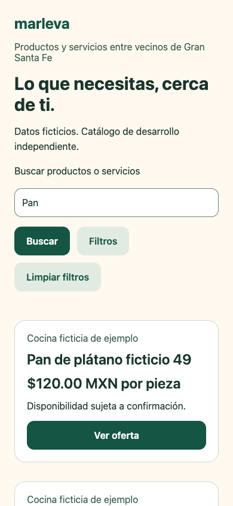
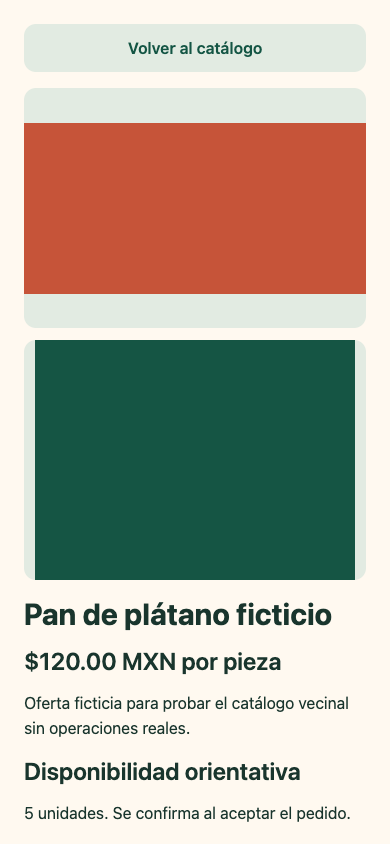
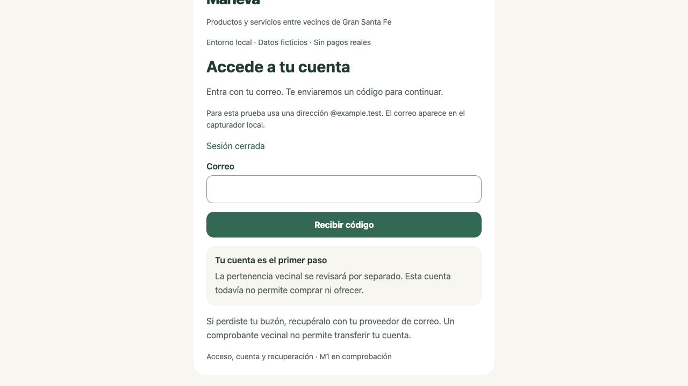
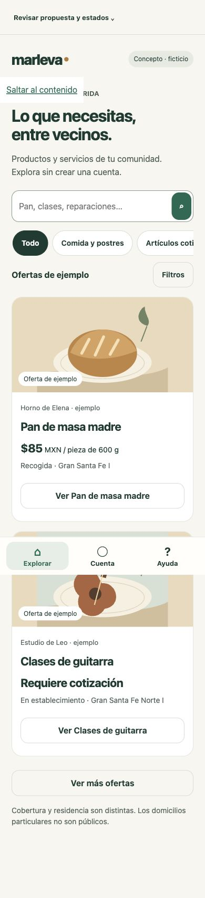
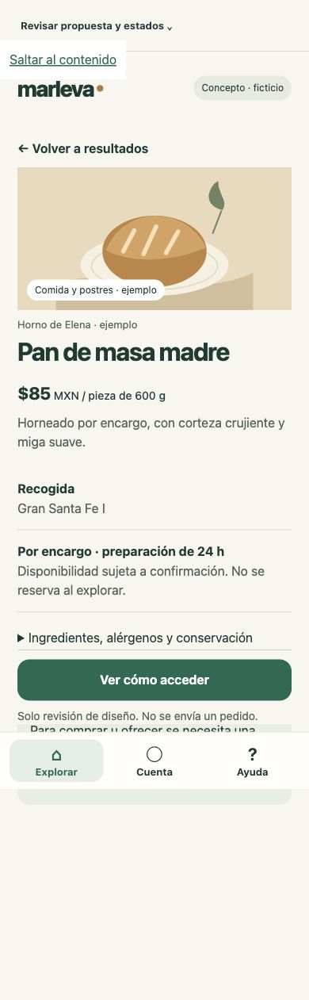
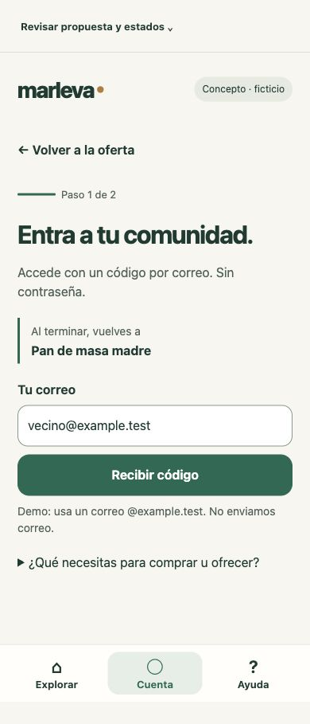

MAR-CHAT-010 · 16 OCTUBRE 2026 · AMERICA/MERIDAMarleva necesita un recorrido claro antes de más funciones.
Cinco hallazgos priorizados y tres pantallas propuestas: explorar, entender una oferta y acceder conservando el contexto.
Auditoría heurística de experiencia de usuario e interfaz (UX/UI). Evidencia de código y navegación; no estudio con vecinos ni medición de conversión. Propuesta pendiente de aprobación.
Probar la propuesta navegable →
Qué revisé y qué pude ejecutar
Marleva: base main 6fd9551575bcce35d96e86939e87119af967cbb3, rama codex/feat-ux-audit-proposal. La raíz original estaba en 7870d1a con documentos ajenos modificados; pull --ff-only abortó para no sobrescribirlos. Copia aislada desde origin/main y pull explícito origin main: actualizado. No reset, stash, borrado, cambio de backend o arranque de emuladores.
La aplicación existente en https://localhost:8443 permitió solicitar código, acceder con ux-audit@example.test, ver cuenta/avisos vacíos y salir. Correo solo en capturador local. No se guardaron códigos, cookies o tokens en capturas. El build servido se verificó visualmente contra las fuentes; no se atribuye un hash de build no comprobado.
M3: inspección de catálogo/detalle/perfil/gestión, composición y capturas previas versionadas. No había web/API M3 escuchando en 8103/3103; no se levantó su base ni se atribuye una nueva prueba integrada M3. Esta limitación no impide comprobar el orden de filtros o los campos que renderiza cada tarjeta.
Referencia: repositorio eventos-merida, 23b572c, copia de lectura en /private/tmp/marleva-ux-eventos-reference. Prototipo exacto: prototipo/index.html; CSS v2 sobreescribe el diseño inicial en la línea 6. docs/SISTEMA_VISUAL.md identifica v2; docs/ESTADO_DESARROLLO.md distingue ampliaciones locales posteriores de la demo alojada.
La demo privada fue accesible en la sesión existente: exploración, detalle, búsqueda/filtros, navegación y controles de simulación observados. No se necesitó evadir acceso ni ejecutar localmente la referencia. La rama principal examinada contiene el prototipo HTML/CSS/JavaScript. La implementación React Native (RN) sí se localizó en otra rama: origin/integration/catalogo-ios, 3868de6. Se leyeron CatalogApp, ExploreScreen, DetailScreen y ui/theme: comparte colores ciruela, pero usa Modal para fecha/zona, pie de exploración y listado de sesiones; no reproduce la navegación inferior y el botón Elegir lugares de la demo web. Lectura de código, sin ejecución nativa. El referente visual elegido sigue siendo el HTML v2, no esas pantallas RN. El contenido alojado y el checkout no se declaran idénticos por compartir v2.
Los cinco problemas
MAR-UX-001 · P1Entrada fragmentada: la oferta y la cuenta no forman un recorrido
Evidencia: La raíz monta M1App; M3 tiene una composición separada y SafeReturn solo admite destinos M1. Quien llega a la raíz encuentra acceso antes de poder ver una oferta. Es una brecha de composición existente, no prueba de que el catálogo público exija sesión.
Entrada M1 · Entrada M3 · Retorno permitido
Propuesta: Proponer exploración pública como entrada y retorno explícito al contexto consultado. El prototipo lo simula; integrar exige diseño/revisión de cliente posterior.
Criterio de revisión: C09 y C15: explorar sin registro; correo no acredita residencia. Comprobar que una persona puede encontrar y reconocer una oferta sin iniciar sesión.
MAR-UX-002 · P1La cuenta acumula acciones y oculta la navegación
Evidencia: Actualizar cuenta tiene el mayor énfasis; después aparecen dos salidas, formulario de correo, consulta y avisos duplicados. La navegación se renderiza al final del contenido desplazable. Observado en la cuenta ficticia; más avisos alargan el acceso a las pestañas por estructura.
Acciones y formulario · Navegación final
Propuesta: Mantener navegación visible; agrupar ajustes y salidas fuera del recorrido principal; avisos en su destino. La dirección M1 aprobada se conserva como antecedente, esta reorganización requiere nueva revisión.
Criterio de revisión: Una persona debe cambiar de sección sin recorrer formularios o avisos. La propuesta muestra la regla de navegación; no rediseña todos los ajustes de M1.
MAR-UX-003 · P1El paso del código compite con pedir otro código
Evidencia: Después de recibir el código, el correo sigue editable y Enviar otro código aparece antes del campo de seis cifras. La ayuda técnica y los límites de pertenencia/recuperación permanecen expandidos. El código y la verificación quedan más abajo en móvil.
Orden de los controles
Propuesta: Separar correo y código en dos pasos de una misma pantalla; verificación principal, reenvío secundario y espera real; corrección del correo explícita; ayuda progresiva.
Criterio de revisión: Usar el código incorrecto sin perder contexto ni confundirlo con sesión vencida. Conservar respuesta genérica, C15, cuotas y límites del servidor.
MAR-UX-004 · P2Los filtros exponen demasiadas decisiones juntas
Evidencia: Al abrir filtros se muestran cinco categorías, siete desarrollos y cuatro modalidades como botones, antes de los resultados. Cada opción consulta de inmediato; no hay resumen textual compacto de filtros aplicados.
Bloque Filters
Propuesta: Categorías en fila y desarrollo/modalidad en un diálogo breve con Aplicar/Cancelar; resumen y limpieza visibles; filtros conservados al fallar.
Criterio de revisión: Encontrar una oferta por cobertura sin confundir cobertura con residencia. Son 16 opciones, no 16 funciones nuevas ni métrica de abandono.
MAR-UX-005 · P2La tarjeta obliga a abrir para conocer la modalidad y cobertura
Evidencia: OfferCard presenta oferente/título/precio/disponibilidad y Ver oferta; modalidades y desarrollos aparecen en Details. Comparar dos ofertas para recogida exige abrir y volver. No se atribuye un fallo de precio: producto y cotización ya están diferenciados.
Tarjeta actual · Condiciones en detalle
Propuesta: Añadir modalidad y cobertura resumidas en tarjeta; en detalle agrupar unidad/precio, preparación y disponibilidad. Mantener ingredientes y alérgenos accesibles.
Criterio de revisión: Identificar qué, cuánto, cómo y dónde se atiende. Sin domicilios particulares, distancia inventada, stock reservado o precio ficticio de servicio.
Patrones que conviene adaptar
| Patrón observado en eventos-merida v2 | Adaptación para Marleva | Límite |
|---|
| Título breve, tarjeta visual y metadatos agrupados. | Producto/servicio, unidad/precio, modalidad y desarrollo atendido antes de abrir. | Ilustraciones ficticias propias; no copiar marcas o fotos de eventos. |
| Navegación fija y acción principal visible en detalle. | Volver a resultados sin perder filtros; siguiente paso claro al consultar oferta. | No crear botón Comprar funcional mientras no existan sus módulos. |
| Pasos con contexto y estados textuales. | Correo → código; mostrar la oferta a la que se regresará; error cerca del campo. | El éxito de acceso no aprueba residencia ni confirma una compra. |
| Controles de demo separados de la experiencia. | Panel de revisión colapsado en móvil, errores simulados explícitos. | Los controles de estados son herramienta de revisión, no menú del producto. |
Patrones que no trasladaría
Calendario/fecha del evento como eje del catálogo, cupos, elegir lugares, Mis planes, guardados y Me interesa como favoritos; publicación ficticia del organizador, gratuidad y disponibilidad de asientos. Marleva usa productos/servicios, pertenencia, oferente por pedido y cotizaciones; favoritos/reseñas/promociones permanecen fuera. Tampoco copiaría ciruela/coral de la referencia: Marleva ya tiene dirección verde aprobada. El ancho fijo de 430 px ayuda a evaluar móvil, pero el cliente final deberá aprovechar escritorio sin un teléfono gigante.
Recorrido con mayor impacto propuesto
Explorar sin cuenta → reconocer precio, modalidad y cobertura → consultar condiciones → entender qué hace falta → correo/código → volver a la misma oferta. La prioridad es hacer comprensible el valor de Marleva antes de pedir datos.
Es una hipótesis de mayor impacto por su posición al inicio del uso y por C09; no una mejora de conversión medida. Se compara con arreglar solo el acceso (menor alcance, valor de catálogo invisible) o comenzar por ajustes de operador (beneficia pocos usuarios y no la comprensión inicial). El primer incremento productivo, tras aprobación, puede mejorar jerarquía del acceso y navegación M1 sin esperar la composición M3. La conexión M1/M3 se diseña después; no amplía ahora permisos o destinos seguros.
| Pantalla | Antes | Después propuesto | Referencia y criterio |
|---|
| Explorar · MAR-M3-UI-001 | Composición separada, bloque de filtros con 16 opciones, tarjeta sin modalidad/cobertura. | Búsqueda y categorías; filtros breves aplicables; tarjeta suficiente para comparar. | Jerarquía v2; Airbnb sirve como comparación documental de cuenta y elegibilidad separadas. No se afirma que ese artículo pruebe exploración pública. |
| Detalle · MAR-M3-UI-002 | Secciones largas y mensaje técnico sobre módulos faltantes. | Qué/cuánto/cómo/dónde/anticipación; explicación del próximo paso y retorno. | Detalle v2; DoorDash documenta recogida y pasos operativos, sin importar su logística o reglas canadienses. |
| Acceso · MAR-M1-UI-001 | Correo/reenvío/código y varias explicaciones en un bloque. | Dos pasos; contexto de oferta; ayuda desplegable; foco en verificar. | Progresión v2; correo sin contraseña de C15 conservado. No Google ni nuevo método. |
Comparativa visual
Antes M1: capturas tomadas en esta auditoría. Antes M3: evidencia histórica versionada; no nueva ejecución. Después: capturas reales del prototipo local, no pantallas integradas en Expo.

Antes: catálogo M3.
Antes: detalle M3.
Antes: acceso M1 actual.
Después: explorar sin cuenta y comparar.
Después: condiciones y siguiente paso.
Después: un paso y contexto conservado.Ver también cuenta actual completa. Las capturas se pueden abrir a tamaño completo.
Paleta, tipografía y componentes para revisión
Tinta #183B32Acción #176B52Papel #F7F6F1Acento #D6A45DSuperficie #FFFFFF
Contrastes calculados: acción/blanco 6.44:1, tinta/papel 11.35:1 y secundario/papel 5.88:1; esto no acredita accesibilidad integral. Secundario #52635C; error #A52A28; foco #A64625. El acento decorativo no lleva texto blanco pequeño. Estados con texto y color. Base 16/1.55; títulos 32/1.1, sección 22, tarjeta 19. Metadatos 14 y etiquetas 12 solo secundarios; escalar sin recortar. Sistema sans-serif sin descarga de fuentes, conforme a la dirección M1 previa. Separación 8/12/16/24/32; radio 14 de control y 20 de tarjeta; áreas táctiles de 48 y acción principal de 52.
Librería Expo propuesta: extender la biblioteca interna sobre View, Text, Pressable, TextInput, Modal y FlatList ya disponibles; reutilizar M1Button/M1Field y Action/OfferCard, con tokens compartidos. Evita mantener dos temas visuales paralelos. No se instala una nueva dependencia ni se cambia Expo 57/React Native 0.86.3. Equivalencia nativa de dialog/foco/teclado y zonas seguras deberá probarse; HTML/CSS es el medio de revisión, no un reemplazo de Expo.
Fuentes técnicas primarias consultadas el 16-10: componentes de React Native y accesibilidad por plataforma. Sus páginas actuales muestran 0.87; esta consulta respalda el patrón de componentes, no una actualización del conjunto instalado. Comparaciones adicionales: crear cuenta Airbnb, recogida DoorDash, Canadá; revisión documental, sin cuentas/pedidos ni recorrido de esas apps. Los otros once referentes de 00 §5 permanecen en 03; no fueron navegados nuevamente.
Cómo revisar y qué aprobar
- Abre la propuesta. Busca pan, aplica desarrollo/modalidad y vuelve al resultado.
- Abre la oferta. Identifica precio por unidad, recogida, cobertura y anticipación; revisa alérgenos.
- Elige Ver cómo acceder, usa vecino@example.test y código ficticio 123456. Prueba primero uno incorrecto. Vuelve a la oferta sin permiso de compra.
- En Revisar propuesta y estados cambia carga, vacío, error, error de siguiente página, retirada, código y sesión vencidos. El agotado se ve al cargar más.
Solicito revisión de jerarquía de las tres pantallas, paleta/tipografía, biblioteca interna y navegación propuesta. Una aprobación visual no autoriza crear pedidos, M2/M8, backend, despliegue o una integración masiva. Navegación Cuenta/Avisos/Ayuda del M1 actual sigue intacta; Explorar/Cuenta/Ayuda de este concepto es una propuesta para el acceso público, no la eliminación de Avisos.
Criterio posterior de prueba con vecinos: pedir que encuentren una oferta pertinente, expliquen precio/modalidad/cobertura y completen acceso simulado sin ayuda; registrar fallos, retrocesos y comprensión de pertenencia. No declarar “entendido en cinco segundos” ni mejora medible hasta observarlo.
Lectura, pruebas y pendientes
README/AGENTS de raíz y código, 00–03 editables en orden; diferencias de main leídas; protocolo, matriz M1 y ADR001/002; casos/secuencias de acceso/retorno y catálogo/detalle. Código de pantallas y composición afectadas leído. Datos/contratos/pruebas consultados por secciones pertinentes: lectura parcial, no auditoría exhaustiva del backend, modelos o toda la suite. Inventario desde raíz en inventario.json; contar rutas no acredita lectura. Dependencias, secretos, binarios y cachés excluidos. Los originales ausentes registrados en 01 no se reconstruyeron. No hay más contenido recuperable en el chat previo que el fragmento inicial aportado.
Diseño previo en diseno.json; comprobaciones concretas en validacion.json. Navegación local dirigida y revisión visual; 14 comprobaciones de estados con jsdom, sin equipararlas a navegador. Los hooks obligatorios del repositorio conservan calidad, unitarias y cobertura. La primera preparación con enlaces fue rechazada por pnpm; se preparó una copia real con el lockfile fijado. No se omiten los hooks ni se relaja el control por ser documentación. Hooks/CI se informan por el SHA propio de esta rama. Aceptación humana, lector real y Android/iOS siguen pendientes. La comparación RN se limita a los archivos indicados de su rama separada, sin instalación/build. La demo privada fue accesible; el navegador integrado no pudo abrir el servidor nuevo, Chrome externo sí.
Sin cambio en apps/api, apps/client, contratos, datos, migraciones o lockfile. Sin gasto, publicación, cuentas externas ni datos reales. Los fixtures locales de la sesión observada se conservan. Guardar/push no actualiza Fuentes compartidas; 01 será el único documento de estado afectado, además del enlace del README. La aprobación visual previa se conserva, y esta propuesta ampliada no se da por aprobada.